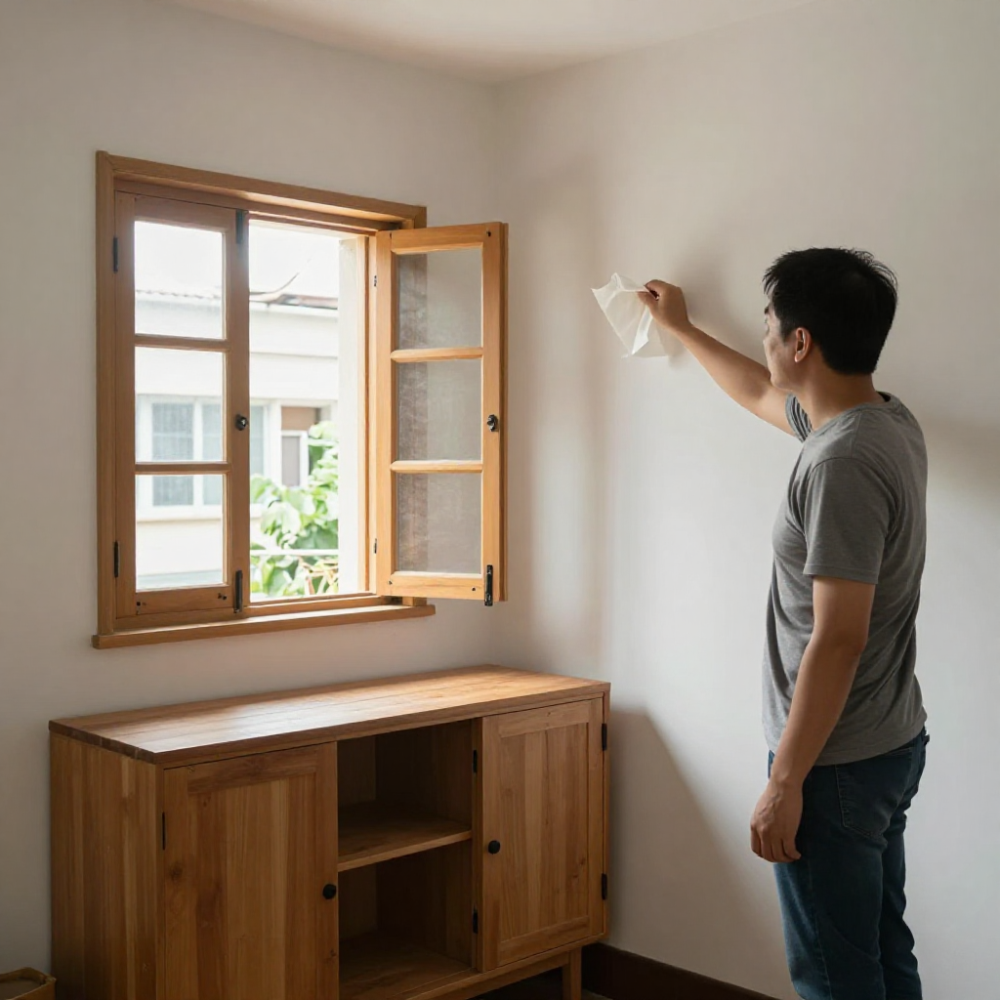
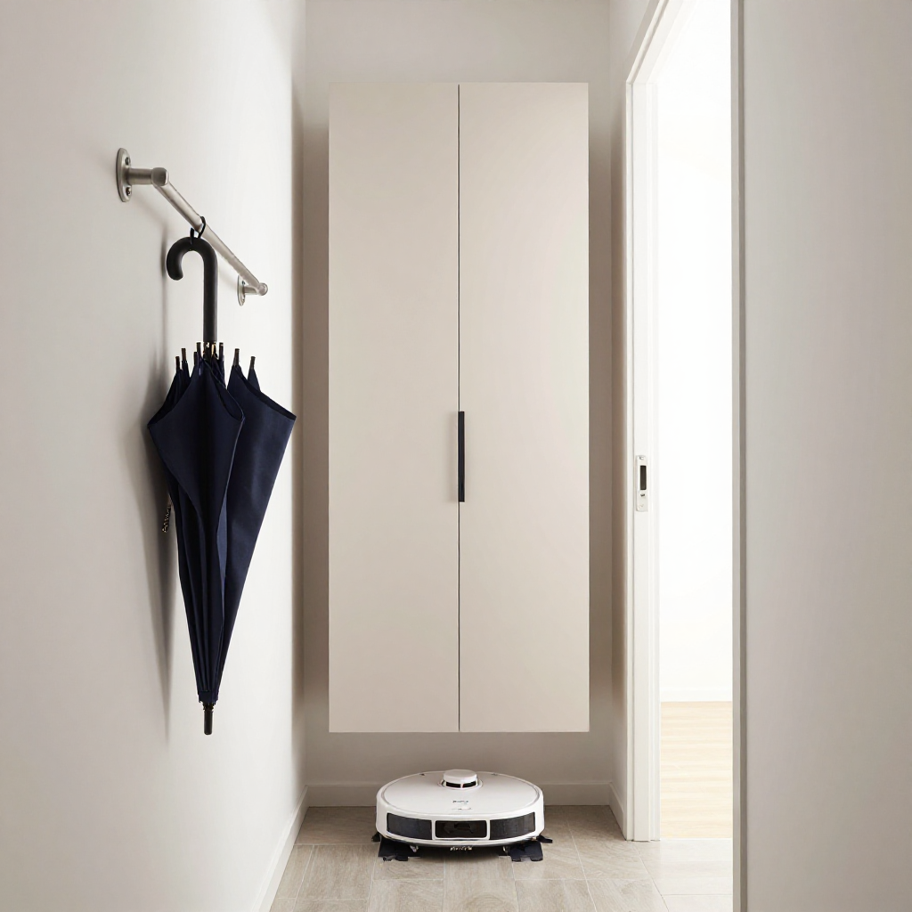

等施政報告之前先把家裝好：張丹楓教你北角舊樓收納與通風規劃

📍 場景：北角唐樓三百呎單位｜主講：張丹楓（8年全屋定制）｜設計溝通：雲蕾｜WhatsApp 報價：852 5190 2328
序幕：政策規劃城市，裝修規劃生活
我係張丹楓，做咗8年裝修，專做香港小戶型定制家具。今日北角一戶三百幾呎，唐樓天井仲滴緊水。業主阿May收工放低手袋就問：「師傅，聽講9月16日會發表香港首個五年規劃，樓市社區會有新變化，我哋係咪應該追最新款？」
我冇即刻答，先蹲低摸咗下廚房近窗牆腳——油漆邊輕微起泡，空氣焗住。我話：「裝修唔係追新聞，先搞清楚一家人每日點樣用間屋。」
第一幕：滿牆櫃vs會焗——通風位係關鍵
阿May話老公想做滿牆櫃，媽咪話櫃太多會焗間屋。我打開窗，用纸巾貼近牆角試風。
「香港住屋面積細，櫃體做到頂確實增加收納，但背板唔可以完全貼死潮濕外牆，櫃內要預留通風位。靠近廚房嘅位置，板材要選耐潮、封邊完整嘅材料，水槽下面更要留檢修空間，萬一漏水唔使拆成間櫃先搵到問題。」
「師傅，咁樣會唔會唔夠靚？」
「靚唔靚，住三年先知。第一次睇樣板，人人都鍾意無縫、滿牆、隱藏門；住落先發現，插座唔夠、櫃門撞床、冷氣風吹唔到，就日日覺得煩。」

第二幕：玄關80厘米闊——懸空薄身櫃連機器人位
我再量過玄關，發現入門位得80厘米闊。
「呢度唔好做厚鞋櫃，改成薄身懸空櫃，下面留機器人同濕傘位。香港落雨多，濕傘一入屋，水氣最容易積喺木腳；櫃腳離地，清潔同乾燥都方便。」
「濕傘位？係喎，次次落雨成支濕遮搞到成間屋都係水。」

第三幕：預算三層分配——先安全再常用最後裝飾
我建議佢哋把預算分成三部分。
「第一層：漏水、電線負荷、通風等基礎安全；第二層：廚房、衣櫃、玄關收納等最常用嘅位置；第三層：燈帶、木飾面、裝飾牆等最後先考慮。尤其舊樓改造，唔好只睇表面，要先確認電箱容量、冷氣排水、窗邊滲水情況。裝修公司報得再平，如果隱蔽工程冇寫清楚，日後加錢同返工，先至係真正嘅貴。」
尾聲：政策規劃城市，裝修規劃生活
阿May站在窗邊，望住遠處北角樓群：「原來等政策消息之前，屋企都有好多決定要做。」我收好卷尺：「無論將來社區點發展，一間住得舒服、收得整齊、空氣流通嘅屋，永遠唔會過時。」
正式開工前記得把材料品牌、厚度、封邊、五金型號、保修期逐項寫進合約，口頭承諾唔夠。真正有經驗嘅師傅，唔係將屋企塞到最滿，而係幫你留返可以呼吸嘅空間。
❓ 北角舊樓裝修三問
Q1：滿牆櫃點解會焗？
背板完全貼死潮濕外牆，濕氣困喺櫃內散唔到，板材就會發霉。解決方法：背板離牆預留3mm透氣位，櫃體頂天但背板唔貼牆。
Q2：懸空鞋櫃下面留幾高？
起碼留10厘米，夠放標準掃地機器人（高9-10厘米）。濕傘位可以另外加側身鋁合金架，唔好放喺木板上。
Q3：預算點分配最穩陣？
三層制：基礎安全（水電、通風、防水）佔50%；常用收納（廚櫃、衣櫃、玄關）佔35%；裝飾美化（燈帶、飾面）佔15%。隱蔽工程一定要逐項寫進合約。
提示：圖片為 Z-Image-Turbo AI 生成的場景示意圖，不是實際住戶單位。